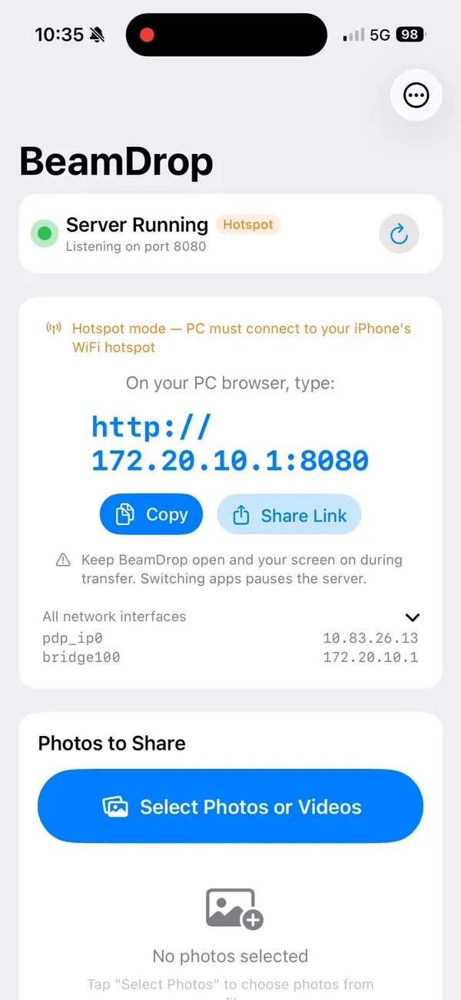

iPhone의 사진과 동영상을 어떤 컴퓨터로든 즉시 옮기세요.
BeamDrop은 iPhone이나 iPad를 작은 로컬 웹 서버로 만듭니다. 사진과 동영상을 고르고, 표시된 주소를 PC나 Mac의 브라우저에서 열면 원본 해상도로 다운로드할 수 있습니다 — 로컬 Wi-Fi 또는 개인용 핫스팟을 통해. USB 케이블, 클라우드 업로드, 로그인은 필요 없습니다.
90초 데모 보기
iPhone에서 권한을 허용하는 순간부터 Windows PC에서 다운로드하기까지 — 전체 과정을 처음부터 끝까지.
사용 방법
두 기기, 몇 번의 탭이면 끝. iPhone이 공유하고 컴퓨터가 내려받습니다.
iPhone에서



http://172.20.10.1:8080 같은 로컬 URL이 표시됩니다.
컴퓨터에서


사람들이 BeamDrop을 쓰는 이유
한 가지 일을 확실히 해내는 도구 — 내 휴대폰의 미디어를 빠르고 사적으로 꺼내 옵니다.
🔌 케이블 없음
USB 케이블, 어댑터, iTunes는 잊으세요. 모든 과정이 로컬 Wi-Fi나 개인용 핫스팟에서 이루어집니다.
☁️ 클라우드 없음
파일은 iPhone에서 컴퓨터로 곧바로 이동합니다. 외부 서버로 업로드되는 일은 절대 없습니다.
🔒 계정 없음
가입도, 로그인도, 추적도 없습니다. 앱을 열고 몇 초 만에 공유를 시작하세요.
🖼️ 원본 해상도
사진과 동영상은 원본 파일 그대로 전송됩니다 — 재압축이나 화질 손실이 없습니다.
⚡ 매우 빠름
로컬 네트워크 속도 덕분에 큰 동영상과 많은 파일도 몇 분이 아니라 순식간에 받을 수 있습니다.
💻 어디서나
브라우저가 있는 기기라면 무엇이든 받을 수 있습니다 — Windows, Mac, Linux, 태블릿, 다른 휴대폰까지.
👁️ 먼저 미리 보기
브라우저에서 썸네일을 보고 원하는 것만 고르거나 Download All로 전체를 받으세요.
🛫 여행에 딱
개인용 핫스팟 모드라 공용 Wi-Fi가 없어도 어디서든 전송할 수 있습니다.
설계부터 사적으로
BeamDrop은 어떤 데이터도 수집하지 않으며 사진이나 동영상을 클라우드로 보내지 않습니다. 앱은 iPhone에서 직접 가벼운 웹 서버를 실행하고, 파일은 오직 내 로컬 네트워크 안에서 내가 선택한 컴퓨터로만 전달됩니다. 계정, 분석, 광고가 없습니다. 앱을 닫으면 서버도 멈춥니다. 자세한 내용은 개인정보 처리방침를 참고하세요.
자주 묻는 질문
iPhone에서 PC로 사진을 옮길 때 케이블이 필요한가요?
아니요. BeamDrop은 로컬 Wi-Fi 또는 iPhone의 개인용 핫스팟으로 전송합니다. USB 케이블, iTunes, 클라우드 업로드가 필요 없습니다.
BeamDrop이 내 사진을 클라우드에 업로드하나요?
아니요. 파일은 로컬 네트워크를 통해 iPhone에서 컴퓨터로 직접 이동합니다. 어떤 서버로도 전송되지 않으며 계정도 필요 없습니다.
지원되는 컴퓨터와 브라우저는 무엇인가요?
최신 브라우저가 있는 기기라면 모두 가능합니다 — Windows, macOS, Linux, 다른 휴대폰이나 태블릿까지. BeamDrop이 보여주는 주소를 열기만 하세요.
컴퓨터에 입력할 주소는 무엇인가요?
BeamDrop이 앱에 http://172.20.10.1:8080 같은 로컬 URL을 표시합니다. 그 주소를 그대로 브라우저에 입력하세요. 아직 보이지 않으면 앱에서 새로고침을 누르세요.
사진과 동영상이 원본 해상도로 전송되나요?
네. BeamDrop은 원본 파일을 재압축 없이 최고 화질로 보냅니다.
연결이 되지 않는 이유는 무엇인가요?
iPhone과 컴퓨터가 같은 Wi-Fi에 있는지, 또는 컴퓨터가 iPhone의 개인용 핫스팟에 연결되어 있는지 확인하세요. 전송 중에는 BeamDrop을 열어 두고 iPhone 화면이 꺼지지 않게 하세요.
필요한 iOS 버전은?
iPhone 및 iPad에서 iOS 17.0 이상.
지원팀에는 어떻게 문의하나요?
wangning.engineer@outlook.com로 메일을 보내주세요. 보통 24~48시간 내에 답변드립니다.
앱 받기
BeamDrop은 iPhone과 iPad용으로 App Store에 있습니다.